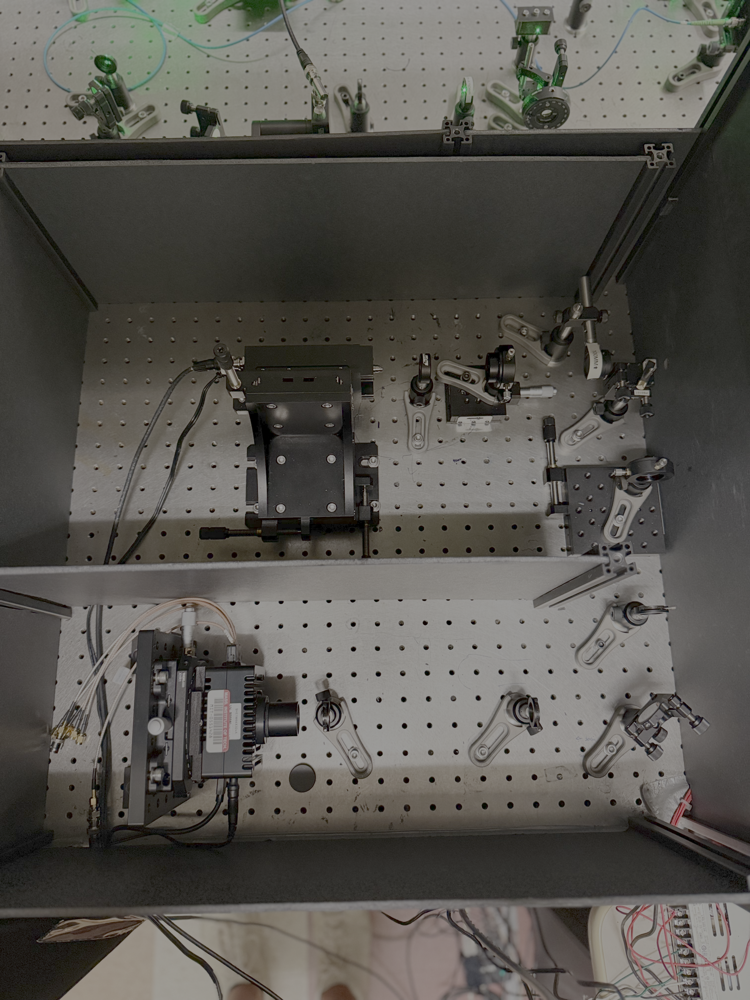

Optics & Imaging¶
Here I summarize all of the details on the construction of the optical setup, designed to operate as an NV fluorescence microscope and perform optical readout of the NV spin state for pulse sequence control.
Design Requirements¶
For imaging, we will need to resolve single NVs down to the diffraction limit and detect single photon emission. Thus the two key components in the setup are the high NA microscope objective and the single photon detector. The design of the optical setup is based around these two components and their specifications. We also need a way to alternate between confocal imaging and widefield imaging by adjusting the excitation beam profile at the objective focal plane and splitting the detection paths to the two detectors. The detection paths will need to be co-aligned with the focus of the excitation beam.
For running pulsed experiments, the excitation laser will need to be modulated with a rise time on the order of 100 ns and pulse duration on the order of 1 \(\mu\)s for efficient spin polarization. The extinction ratio (measure of leakage light when laser is gated off) should be greater than 40 dB to avoid repolarization during microwave control. For widefield experiments, the intensity of the excitation beam over the desired field of view should reach approximately the same intensity used for single NV experiments where the light is focused to the diffraction spot. See section () for the exact calculation, which turns out to be ~ 60 mW.
Layout of the Optical Setup¶

Schematic of the NV fluorescence microscope setup for confocal and widefield imaging.¶
Photos¶
(make subfigures like in the homepage)

Picture of the excitation optics outside of the science box. The science box is located in the upper left of the photo, and the collection box is in the upper right.¶


Picture of the collection optics outside of the science box.¶
Components¶
Experiment laser — Lighthouse Photonics Sprout 5 W CW 532 nm DPSS laser https://www.gophotonics.com/products/lasers/lighthouse-photonics/29-511-sprout-g-5w
Alignment laser — Labs Electronics DLnsec 110 mW pulsed 520 nm diode laser https://labs-electronics.com/your-products/
AOM (Acousto-Optic Modulator) — IntraAction Corp (need to find model number)
Optical fiber– Single mode -Fiber collimator 1 -** Fiber collimator 2**
Microscope objective- NA, working distance, manufacturer/model -SPCM -SPAD Camera
Operation¶
The two lasers have served different functions on the setup over the years. Originally, the setup relied on a single high power laser (Lighthouse Photonics Sprout 5 W 532 nm laser), which was also used to power NV1 simultaneously. The laser power supply had stability problems and I made some repairs to keep it alive, but we ultimately decided to upgrade our laser to a pulsed low power laser (DLnsec 110 mW 520 nm). This worked for running single NV confocal experiments since the max required power at the objective focal plane is ~ 0.5 mW, but it could not reach the power required for widefield experiments. We reinstalled the 5 W laser to run both confocal and widefield experiments and kept the DLnsec laser for alignment and imaging since the software control can be configured with Qudi.
The Sprout laser is CW, so we use an AOM (intraction Corp) to modulate the output. The AOM is aligned to a single pass configuration (since we have enough space to isolate the 0th order beam with the iris). The two lenses are configured in a telescope arrangement to match the beam size to the optimal size for the AOM. An additional lens (f = 750 mm) was added to correct the light collimation before entering the fiber coupler. The DLnsec laser is directly modulated from a TTL signal out of the OPX+. The beam shape out of the laser diode is distorted (the beam width is stretched along one axis relative to the other). This is partially corrected with a 2:1 anamorphic prism pair (see details in Optics Alignment). The quarter waveplate and half waveplate are used to tune the power reflected from the polarizing beam splitter (we found the light had a some circular polarization).
The optical fiber on the excitation path serves two main purposes. First, since it is a single mode fiber, it acts as a spatial filter for the excitation beam to produce a clean Gaussian profile at the output. Second, it decouples the alignment of the beam path relative to the objective with the alignment upstream for the laser sources (which as we have found has required several changes over the evolution of NV2). Thus, when we reinstalled the high power laser back on the setup, the beam only needed to be recoupled to the fiber, allowing for both lasers to be co-aligned with the objective. To couple both beams to the same fiber, we use a polarizing beam splitter (PBS), and each path can be independently aligned with a different set of mirrors (exact alignment steps are included in Optics Alignment). The closer pair are mirrors from the fiber are fixed once both lasers are aligned to the fiber. Each beam then has two pairs of mirrors to independently optimize the fiber coupling (for the DLNSec one of these mirrors is the PBS).
For confocal imaging, the green light out of the fiber is collimated and the beam diameter is magnified using two lenses in order to overlap with the objective aperture (\(D\)). We are using a Nikon CFI Plan Fluor 100X Oil, 1.3 NA objective. The effective focal length is \(f_{obj} = 200 \text{ mm}/100 = 2 \text{ mm}\). From simple geometric optics, \(D = 2 \times NA/f_{obj} = 5.2 \text{ mm}\), so the beam diameter is magnified to a size of 5-6 mm.
The green light is routed into the science box and reflected off the dichroic mirror to pass through the objective which focuses the light into the sample. The diamond sample is mounted on top of a cover glass patterned with a microwave stripline structure also referred to as a coplanar waveguides (CPW). Immersion oil is added between the objective front lens and the cover glass. The working distance (WD) of the objective is 0.16 mm for a cover glass thickness of 0.17 mm. This means the cover glass inner face closest to the objective is positioned 0.16 mm away in order for the focus of the objective to be at the diamond surface (the thickness of the CPW is only around 500 nm). See the schematic below for the arrangement of the sample relative to the objective.

Schematic of the objective, cover glass (CG), and diamond sample arrangement.¶
For the current NV2 sample, the NV layer is implanted at an approximate depth of 20 nm from the surface (this is well below the diffraction limit so we can treat the NV layer as effectively at the surface). To position the diamond surface at the objective focal plane, we perform a piezo scan along the axial (Z) direction and record the NV fluorescence profile measured with the SPCM (more details in Sample Mounting).
For a perfect Gaussian beam matched to the objective aperture (\(D\)) of the objective, the spot size (defined as the \(1/e^2\) beam diameter) of the green laser beam at the focal plane is \(s\approx 1.83 \lambda/(2 NA) \approx 374\) nm [1]. The optical initialization and readout signal of a single NV or ensemble area is strongly dependent on the intensity profile, which is determined from the incident power and spot size at the focal plane. The average intensity optimized for a single NV will determine the total power for the widefield illumination used for the SPAD measurements over the larger array.
The fluorescence from a single NV can be treated as a point source and covers an emission band between 650 nm to 750 nm at room temperature[2]). The fluorescence is collected along the same path through the objective and passes through the dichroic followed by a longpass filter to remove the stray excitation light. The optical resolution or FWHM of the lateral point spread function (PSF) of the objective is \(0.51 \times \lambda /NA \approx 270\) nm (or 460 nm 1/e^2 diameter) [3]. There are two paths for the collected NV fluorescence: one for confocal imaging onto the SPCM and one for widefield imaging onto the SPAD array. For the confocal path, the light is first imaged onto a pinhole to filter out any out of focus light from the background and to improve contrast. For free space confocal detection, there are typically two lenses after the pinhole: one to collimate the light which passes through the pinhole and one to focus the light onto the detector. Alternatively, for fiber-based detection, a single lens after the objective focuses the light onto the fiber which then acts as a pinhole. Our setup is a free space detection path, however we only use one lens after the pinhole to improve space efficiency. Following the ray optics equation for a thin lens (\(\frac{1}{z} + \frac{1}{z'} \approx \frac{1}{f}\)), the lens after the pinhole is positioned such that the light is focused onto the detector[4][5]. See the schematic below of the collection path.

Schematic of the collection path for the confocal microscope.¶
The first lens after the pinhole has a focal length of 100 mm, leading to an overall magnification of 50X from the focal plane of the objective to the image plane of this lens. Assuming the diffraction limited spot follows a gaussian profile, the spot size at the image plane would be 46 \(\mu\)m. We use a 50 \(\mu\)m pinhole, to remove any light collection from outside the diffraction-limited spot. With the pinhole, the axial resolution of the confocal microscope PSF can be calculated to be approximately \(1.4 \lambda n /NA^2 \approx 1\) \(\mu\)m. From the diagram above, we can apply the ray optics equations to calculate the spot size of the image at the detector: $\( M \approx \left| \frac{f}{z-f} \right| = \frac{2}{3} \)\( The spot size is then \)\approx 20 \mu\(m, well within the 180 \)\mu$m active area diameter.
For the SPAD array path, we use a single lens to image the fluorescence onto the camera. The SPAD array sensor features 64x32 pixels, where each pixel is 150 \(\mu\)m wide (see image below). For SPAD readout of the NV array, we want each implantation spot in the sample (separated by 1\(\mu\)m) to be separated by at least two pixels in the image, thus creating a checkerboard pattern. This requires 300X magnification, achieved by using an imaging lens with a focal length of 600 mm. The total field of view of the objective is approximately 50 \(\mu\)m, which fits within the total sensor area. Given the limited laser power, we illuminate a single 5x5 NV array at a time, thus spanning only 9x9 pixels. To illuminate the full array, we send in collimated light by focusing the excitation beam at the back plane of the objective (the lens used for this is mounted on a flip-mount allowing the setup to alternate between confocal and widefield imaging modalities). This lens has a focal length of 1 m, which when combined with the objective as a telescope creates a collimated beam at the sample plane with a beam diameter of 10 \(\mu\)m, large enough to illuminate the array.

The SPAD array camera from Micro Photon Devices. Image adapted from[6].¶